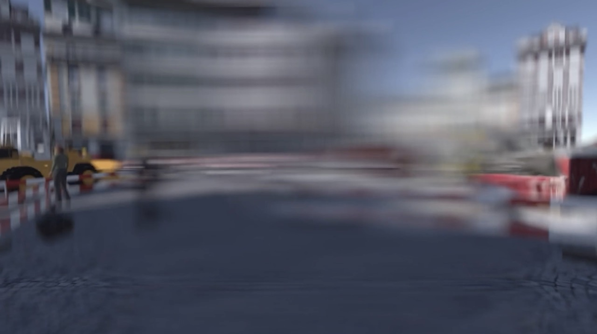

Web prototype
A city walk built in Unity WebGL, about three minutes per perspective.
Reflection
Three minutes per round turned out to be a lot to ask online. WebGL performance on Apple devices in particular fell short, and even close troubleshooting with our game designer could not fully fix it. The clearest lesson of the project: a good idea still needs to survive the format it is built for.